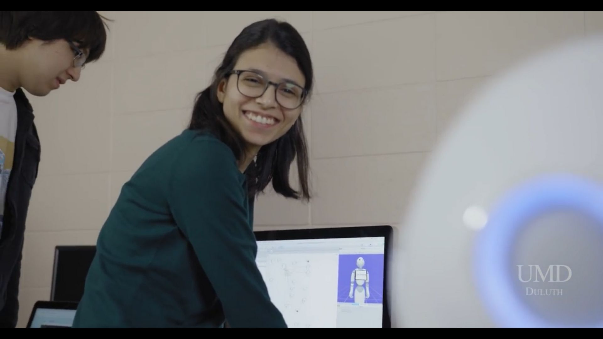

Machine Learning Engineer · Ph.D., Computer Science

I build intelligent systems that hold up in the real world — from deep learning models to embedded signal processing for hearing aids.
I completed a Ph.D. in Computer Science at the University of Iowa, advised by Dr. Octav Chipara as part of the Mobile Systems Laboratory, and now work as a Machine Learning Engineer. My work sits at the intersection of deep learning and embedded systems, with a continued focus on healthcare — from denoising algorithms for hearing aids to broader questions in intelligent, real-time systems.
This page collects my research, writing, and a few talks along the way. Publications and background are below — feel free to reach out if something here overlaps with what you're working on.